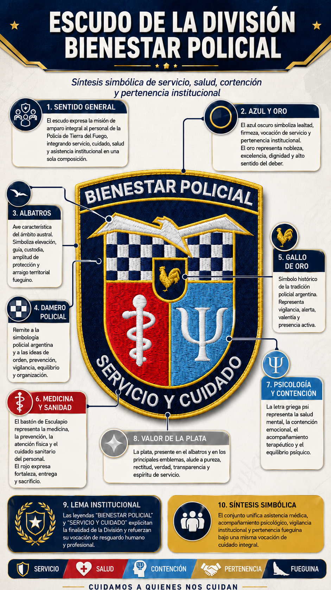

Escudo de la División Bienestar Policial
El escudo expresa, en clave heráldica, la misión de amparo integral al personal policial, reuniendo en una sola composición los valores de servicio, cuidado, salud, vigilancia y pertenencia fueguina.
El escudo expresa, en clave heráldica, la misión de amparo integral al personal policial, reuniendo en una sola composición los valores de servicio, cuidado, salud, vigilancia y pertenencia fueguina.


La forma del escudo responde a la tradición emblemática policial argentina y se organiza sobre un campo de azul oscuro con bordura fileteada en oro. El azul representa lealtad, firmeza, vocación de servicio y pertenencia institucional, mientras el oro expresa dignidad, nobleza y excelencia en la función.
Las leyendas “Bienestar Policial” y “Servicio y Cuidado” formulan de manera directa la finalidad de la División, haciendo del lema una síntesis expresa de su misión protectora y asistencial.
En la parte superior se destaca un albatros de plata, ave característica de Tierra del Fuego y del horizonte austral. Su presencia simboliza amplitud de protección, elevación, guía, custodia y arraigo territorial, proyectando sobre el blasón la identidad marítima y austral de la provincia.
Debajo del albatros se dispone un damero en azul y plata, vinculado a la simbología policial y a la noción de orden, prevención y vigilancia. En este contexto, el damero también expresa equilibrio y organización al servicio del bienestar del personal.
En el centro del campo aparece un escusón de azul con un gallo de oro. El gallo constituye un símbolo histórico de la tradición policial argentina y representa vigilancia, alerta, valentía y presencia activa.
Ubicado en el corazón del escudo, afirma que el bienestar policial exige una custodia permanente sobre la integridad de quienes sirven a la comunidad, consolidando la idea de una vigilancia protectora orientada al cuidado interno.
La mitad inferior diestra, en gules, contiene el bastón de Esculapio bordado en plata. Este signo representa la medicina, la sanidad, la prevención y la atención física del personal, mientras el rojo expresa fortaleza, entrega y disposición al sacrificio.
La mitad inferior siniestra, en celeste, muestra la letra griega psi en plata, símbolo universal de la psicología. Este cuartel representa la contención emocional, la salud mental, el acompañamiento terapéutico y el equilibrio psíquico como dimensiones esenciales del bienestar institucional.
La plata, presente en el albatros, en el bastón de Esculapio y en la psi, alude a pureza, rectitud, verdad, transparencia y espíritu de servicio. Así, el escudo se presenta como una síntesis simbólica de asistencia médica, acompañamiento psicológico, vigilancia institucional y pertenencia fueguina, ordenadas bajo una misma vocación de resguardo humano y profesional.

Exégesis de un servicio